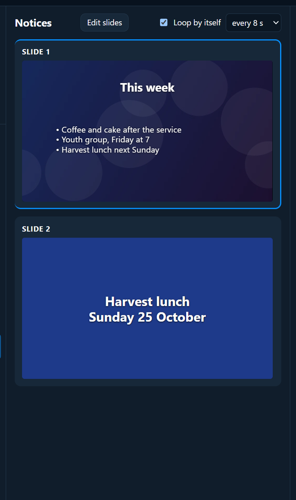

Media and slides
Announcement loops
Before the service, it’s good to have the notices going round on the screen by themselves while people come in.
Making one
Any of these can loop:
- Your own slides: click + Slides and make them. See Slide designer.
- Pictures: in the Media tab, open a folder of notice pictures and click Make a slideshow of these pictures.
- A PowerPoint or PDF of notices. See PowerPoint and PDF.
Turning on the loop
Select the item in the service. Above its slides:
- Tick Loop by itself.
- Choose how long each slide stays: every 5 s up to every 60 s. Eight to ten seconds suits most notices.

Click the first slide to start. A LOOPING label shows while it goes round. It stops when you move on to anything else.
Black or Logo pauses it (it says PAUSED). Press the button again to carry on.
With walk-in music
- Start the loop.
- In the Media tab, open Music and Audio and click ▶ Play all.
- When the service starts, click Fade out under Music and audio, then click your first song.
A countdown too
To show “Service starts in 4:59” with the notices, start a Count down to time in Band & preacher prompts, and tick Also show the countdown on the congregation screen. See Timers and prompts.